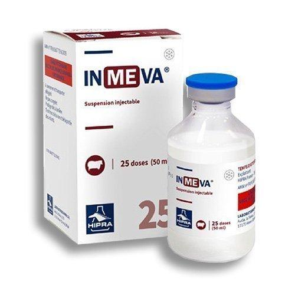

واکسن کشته علیه آلودگی به کلامیدیا آبورتوس و سالمونلا آبورتوس اویس، هیپرا اسپانیا
📝ترکیب:
هر دوز واکسن اینموا (2 میلی لیتر) حاوی:
باکتری کشته کلامیدیا آبورتوس سویه RP*≥1 A22
باکتری کشته سالمونلا آبورتوس اویس سویه RP*≥1 Sao
و ادجوانت(یاور) هیدروکسید آلومینیوم و دی اتیل آمینواتیل دکستران (DEAE-Dextran) جهت تقویت پاسخ ایمنی می باشد.
* قدرت نسبی (ارزیابی پتانسیل نسبی این واکسن توسط روش استاندارد الایزا نشان می دهد که این واکسن به طور کامل موثر می باشد)
📝شکل واکسن:
سوسپانسیون تزریقی شیری رنگ
📝موارد مصرف:
پیشگیری از سقط، مرده زایی، تولد نوزادان ضعیف، مرگ و میر (تلفات) بره ها و بزغاله ها و سایر بیماریهای تولید مثلی ناشی از کلامیدیا آبورتوس و سالمونلا آبورتوس اویس و کاهش دفع این پاتوژن ها از حیوانات آلوده
در صورت واکسیناسیون طبق برنامه های پیشنهادی واکسن می تواند در تمام دوره آبستنی دام ها را حفاظت نماید.
📝اثرات جانبی:
واکنش بافتی موضعی ملموس ممکن است در محل تزریق حدوداً یک هفته پس از تزریق واکسن دیده شود. در اغلب موارد این واکنش جزئی می باشد که ظرف مدت دو هفته بدون نیاز به هرگونه درمان رفع می گردد. افزایش درجه حرارت بدن تا یک درجه سانتیگراد ممکن است یک روز پس از واکسیناسیون دیده شود که بصورت خودبخودی طی 24 ساعت از بین خواهد رفت.
📝گونه های هدف:
گوسفند و بز
📝میزان و نحوه مصرف:
2 میلی لیتر به صورت تزریق زیر جلدی (ناحیه پشت شانه در محوطه دنده)
میش های جوان را می توان از 5 ماهگی به بعد واکسینه نمود
📝اصول برنامه واکسیناسیون:
جهت ایمنی زایی و حفاظت مناسب حیوانات می بایست دو دوز واکسن با فاصله سه هفته دریافت نمایند. اولین دوز واکسن 5 هفته پیش از تلقیح یا جفت گیری انجام گیرد و دوز دوم سه هفته بعد تزریق گردد.
واکسن یادآور سال بعد نیز بهتر است 2 هفته قبل از تلقیح مصنوعی و یا جفت گیری صورت پذیرد. به شرطی که این فاصله زمانی با واکسن قبلی بیش از یک سال نگردد.
📝ملاحظات قبل از تجویز واکسن:
• واکسیناسیون فقط در دام های سالم انجام شود.
در صورت مشاهده هرگونه نشانه ازدیاد حساسیت در دام ها که بدلیل مواد موجود در ادجوانت )یاور( می تواند رخ دهد، واکسیناسیون در دام های حساس نباید صورت گیرد.
• تجهیزات استریل برای واکسیناسیون استفاده گردد.
• واکسیناسیون بلافاصله بعد از باز کردن شیشه انجام شود.
• توصیه میگردد دمای واکسن در زمان تجویز بین 15 تا 25 درجه سانتی گراد باشد.
• شیشه های واکسن قبل از تجویز خوب تکان داده شود.
📝دوره پرهیز از مصرف:
ندارد.
📝شرایط نگهداری:
• واکسن در دمای 8- 2 درجه سانتیگراد نگهداری و حمل شود. ویال های واکسن از انجماد و نور محافظت شود.
• استفاده از واکسن های منقضی (بر اساس تاریخ درج شده بر روی لیبل دارو) به هیچ وجه توصیه نمی شود.
احتیاط های ضروری
• در صورت تزریق تصادفی به فرد واکسیناتور، به سرعت فرد واکسیناتور با در دست داشتن مشخصات واکسن به مراکز درمانی منتقل شود.
• تجویز واکسن تا دو برابر دوز توصیه شده باعث بروز علائم و اثرات جانبی در حیوان نمی شود.
• از مخلوط کردن این واکسن با دیگر ترکیبات دارویی پرهیز شود. بطری ها، سرنگ ها و سرسوزن های استفاده شده بر اساس قوانین محلی امحاء گردد.
📝واکسیناسیون دام های آبستن و شیرده:
با وجود اینکه واکسیناسیون جهت استفاده در دام های آبستن و شیرده بی خطر می باشد. استفاده از واکسن به دلیل ایجاد استرس تزریق در حیوان در ماه آخر آبستنی توصیه نمی شود.
📝تداخل دارویی:
تاکنون موردی گزارش نشده است.
📝عمر قفسه ای:
2 سال
📝بسته بندی:
واکسن اینموا در بسته های حاوی ویال های 5 دوزی (10 میلی لیتر)، 25دوزی (50 میلی لیتر)، 50 دوزی (100 میلی لیتر) و 125 دوزی (250 میلی لیتر) تولید و عرضه می گردد.
📝شرکت سازنده:
شرکت هیپرا اسپانیا
📝شركت واردکننده:
شرکت سرور فجر
📝توزیع کننده:
شرکت پخش سراسری پارسیان پخش اکسیر
دانلود کاتالوگ واکسن